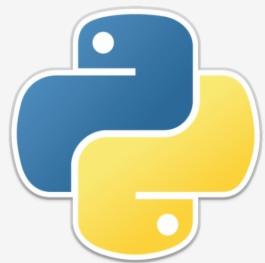
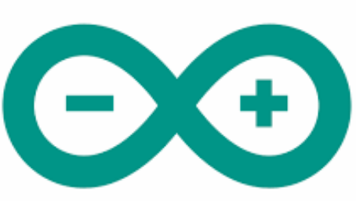
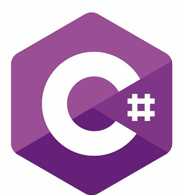

Skills
HTML
CSS
Javascript
PHP
MYSQL

Python

Arduino

I have developed a strong proficiency in various programming languages, including Python, C++, and C#, alongside practical skills in web application development. My academic journey involved engaging in projects that required critical thinking and problem-solving, such as my undergraduate thesis, where I successfully created a mobile application using Kotlin. This experience not only enhanced my technical expertise but also familiarized me with software development methodologies and collaborative tools like Git.
In addition to my technical skills, I gained valuable hands-on experience through internships, where I studied HTML, CSS, JavaScript, PHP, and MySQL, allowing me to apply my knowledge in real-world scenarios. These experiences deepened my interest in areas such as cybersecurity and embedded systems. With a passion for continuous learning and a strong desire to adapt to new technologies, I am excited to contribute to innovative projects and make a meaningful impact in the field of Computer Engineering.
Phone: +63 919 093 3619
Email: gabrieltrinidad678@gmail.com